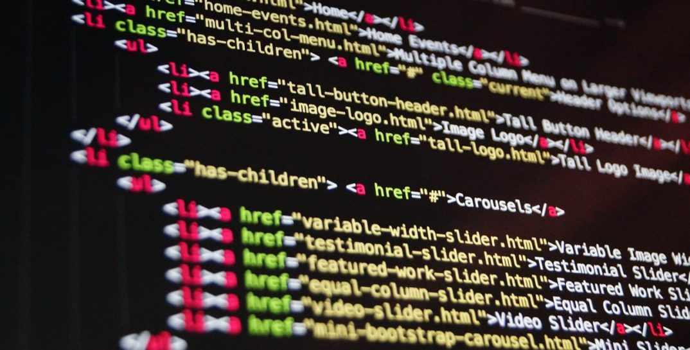

Qu'est ce que le codage informatique?
Le codage est un langage (les ordinateur on leur propres langage appeler "Code Machine") qui permet a une personne de faire une programmation informatique c'est a dire faire des programmes pour développer des logiciels, ou page web, par exemple, mais aussi pour dire à une machine ce qu'elle doit faire, la guider.
Néanmoins nous pouvons trouver différents langage de codage comme Phyton, html, javascript, php .
C'est à l'aide du code informatique que l'on conçoit des jeux vidéo, des sites Internet, des applications mobiles ou même des robots.
Le codage est très important dans le monde numérique car c'est ce qui vas faire fonctionner un site web, un jeux ou un appareil éléctrique , surtout que de nos jour on utilise de plus en plus d'appareil numérique et la plus part de ces appareils dépendent d'un code.
La façon dont un code est écrit peut etre très compliquer a comprendre quand on le vois mais si ont le décompose il est plus facile a comprendre.

Nous allons désormais voir a quoi sert la programmation...
Qu'est ce que la programmation?
c'est un programme qui demande a l'ordinateur de faire quelque chose et de le traduire a une personne non programmeur . C'est en gros la compilation qui transforme le code de notre langage de programmation en code machine que l’ordinateur peut comprendre . L’image ci-dessous montre comment spécifier à l’ordinateur de dire « Hello, world ». Demande d’afficher le message « Hello, world »
Au lieu d’utiliser du code machine, nous utilisons ici un langage de programmation appelé « Python ». Presque tous les langages de programmation fonctionnent de la même manière.
Si le texte n'a pas ete claire pout vous voici une video qui resume tout aussi bien: